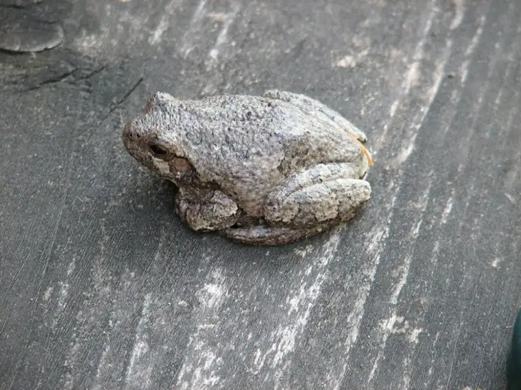
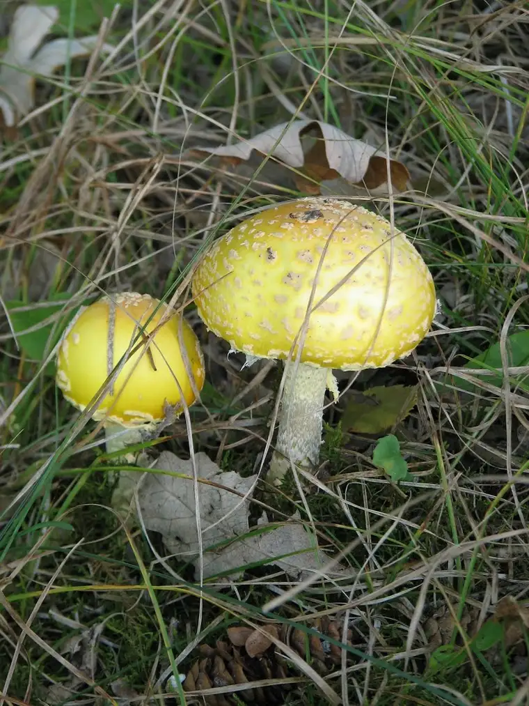
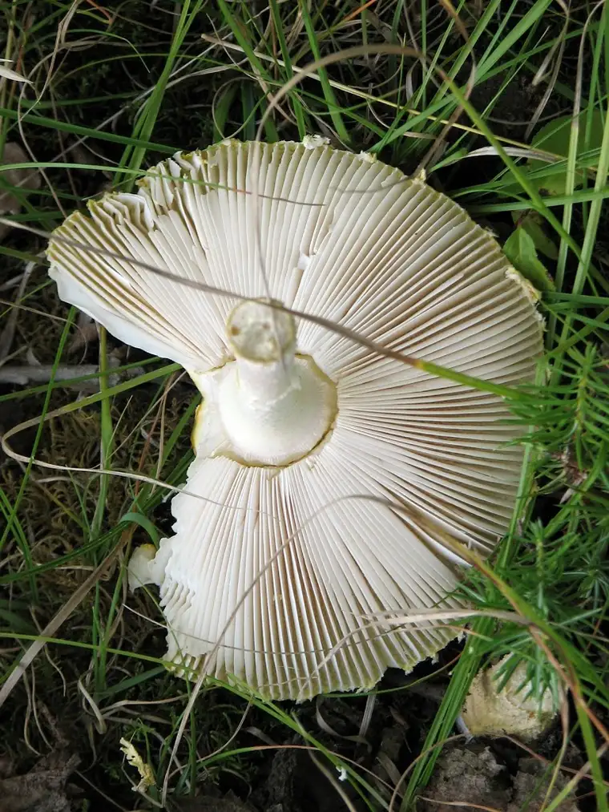

Whenever I have my camera with me, I’m in my own little world. I’ll be somewhere and then suddenly, something will capture my attention from afar and off I’ll go to investigate. The people around me might wonder what it is that I’m doing with my camera pointed downward, or upward, or sideways. I might be lying on the ground or standing on a chair. During these moments, my kids grow impatient and wonder what is taking me so long. My husband has that “There she goes again” look in his eyes. I can’t help it. It might be a certain cloud formation that will never look quite like that again. Maybe I’ve spied a critter generous enough to stay still while I click. Or, it might be a certain look on the face of my child, not so much the polished grin but the pout that is more indicative of everyday life.
If you’re with me and I suddenly dash of in another direction, not to worry. I’m looking at life from the lens of my camera, getting a close-up glimpse, freezing a moment that will never come again, letting it take my breath away. The bonus is that I have the pleasure of sharing these images with all of you. Enjoy. Soon, these signs of life will give way to winter chill. Absorb them with me while we still can. And, by the way, thanks for taking the time to stop by.


{kind=link}
{kind=link}
{kind=link}